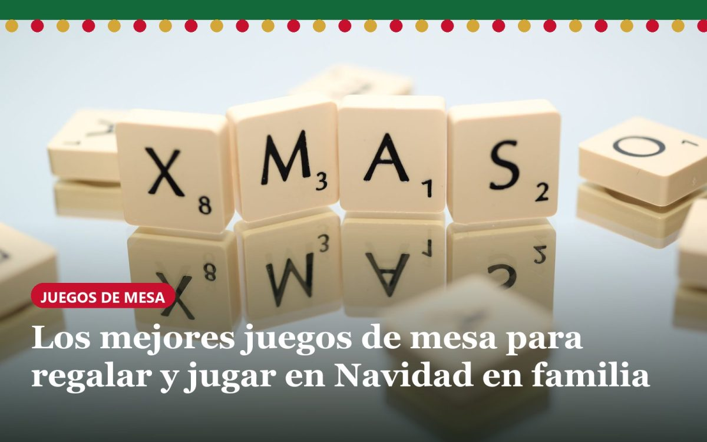

Los mejores juegos de mesa para regalar y jugar en Navidad en familia (2026)

Un buen juego de mesa es de los pocos regalos que se usan el mismo día que se abren. Estos 12 son los que más se repiten en las recomendaciones de tiendas especializadas y prensa, y varios han ganado el Spiel des Jahres, el premio alemán al juego del año, que es la referencia en juegos familiares. Los hemos agrupado según quién vaya a jugar y cuánto tiempo tengáis. Los precios son orientativos en tiendas españolas y cambian mucho con las ofertas de Navidad.
Para niños pequeños (4-7 años)
- Dobble (Zygomatic / Asmodee). Cada carta tiene ocho dibujos y entre dos cartas cualquiera siempre hay uno, y solo uno, repetido. Gana el primero que lo ve y lo dice en voz alta. Trae varios minijuegos y lo pueden jugar a la vez un niño de seis años y su abuelo, y no siempre gana el abuelo. *Edad:* desde 6 años (hay un Dobble Kids para niños desde 4). *Jugadores:* 2 a 8. *Duración:* 10-15 minutos. *Precio:* unos 14-16 €.
- Rory's Story Cubes (Zygomatic / Asmodee). Nueve dados con dibujos en lugar de números: se tiran y hay que inventar una historia que use todos los dibujos. No hay ganadores ni perdedores, así que es ideal para los peques y para los que se enfadan al perder. Cabe en un bolsillo. *Edad:* desde 6 años. *Jugadores:* 1 o más. *Duración:* unos 20 minutos. *Precio:* unos 10-12 €.
- Bandido (Helvetiq; en España, Ludilo). Un preso intenta escapar cavando túneles y todos los jugadores juntos tienen que poner cartas para cerrarle las salidas. Es cooperativo: se gana o se pierde en equipo, lo que evita llantos en la sobremesa. Se puede jugar incluso solo. *Edad:* desde 6 años. *Jugadores:* 1 a 4. *Duración:* 10-15 minutos. *Precio:* unos 11-13 €.
Para toda la familia
- Dixit (Libellud / Asmodee). Cartas con ilustraciones preciosas y muy raras. Uno elige una carta y dice una palabra o frase sobre ella; los demás eligen una carta suya que encaje y luego se vota cuál era la original. Lo bueno es que no hace falta saber nada: gana quien mejor conoce a los demás. Ganó el Spiel des Jahres en 2010. *Edad:* desde 8 años. *Jugadores:* 3 a 6 (hasta 8 en la edición más reciente). *Duración:* unos 30 minutos. *Precio:* unos 30-33 €.
- Carcassonne (Devir). Por turnos se colocan losetas para ir construyendo un paisaje medieval de caminos, ciudades y monasterios, y se ponen muñequitos para puntuar. Se aprende en una partida y engancha durante años. Ganó el Spiel des Jahres en 2001 y tiene ediciones y ampliaciones de todo tipo. *Edad:* desde 7 años. *Jugadores:* 2 a 5. *Duración:* unos 35-45 minutos. *Precio:* unos 28-30 €.
- ¡Aventureros al tren! (Days of Wonder; en España, Edge Entertainment). Se reúnen cartas de colores para construir líneas de tren entre ciudades y completar rutas secretas. Las reglas se explican en cinco minutos, pero tiene la estrategia justa para que los mayores también se piquen. Ganó el Spiel des Jahres en 2004. Es de los más caros de la lista, pero también de los que más años duran en casa. *Edad:* desde 8 años. *Jugadores:* 2 a 5. *Duración:* 30-60 minutos. *Precio:* unos 45-50 €.
Para adultos y sobremesa larga
- Time's Up! Party (Asmodee). La nueva versión del clásico Time's Up amarillo. Por equipos, hay que hacer adivinar personajes famosos, películas y cantantes en 30 segundos: primero se puede hablar, luego solo una palabra y al final solo con mímica. Las risas de la tercera ronda no tienen precio. *Edad:* desde 10 años. *Jugadores:* 4 o más. *Duración:* unos 40 minutos. *Precio:* unos 20-22 €.
- Código Secreto (Devir). Dos equipos, una cuadrícula de palabras y un jefe de espías por equipo que tiene que dar pistas de una sola palabra para que los suyos adivinen las correctas sin tocar al asesino. Funciona igual con 4 que con 10 personas, que en Navidad es una ventaja. Ganó el Spiel des Jahres en 2016. Para jugar con niños más pequeños existe *Código Secreto Imágenes*. *Edad:* desde 8 años según la tienda, aunque se disfruta más a partir de los 12. *Jugadores:* 2 a 8 o más. *Duración:* unos 15 minutos por partida (y siempre se juega otra). *Precio:* unos 22-25 €.
- Azul (Plan B Games, de Michael Kiesling). Se cogen azulejos de colores de unos expositores comunes para decorar la pared del palacio, intentando no desperdiciar ninguno. Es tranquilo, bonito y muy táctico: perfecto para cuando ya ha terminado la cena y los niños se han ido a dormir. Ganó el Spiel des Jahres en 2018. *Edad:* desde 8 años. *Jugadores:* 2 a 4. *Duración:* unos 45 minutos. *Precio:* unos 40-45 €.
Para jugar en 15 minutos
- Virus! (Tranjis Games). Un juego de cartas español: hay que reunir cuatro órganos sanos mientras los demás te infectan con virus, y tú los vacunas o se los pasas a otro. Es rápido, muy puñetero y barato, y se ha convertido en un clásico de las sobremesas en España. *Edad:* desde 8 años. *Jugadores:* 2 a 6. *Duración:* unos 20 minutos. *Precio:* unos 12-15 €.
- Kingdomino (Blue Orange; en España, Mebo). Cada uno construye su pequeño reino de 5x5 casillas eligiendo fichas de dominó con paisajes: trigo, bosque, lagos, minas… Es sencillo, pero obliga a pensar, y una partida dura lo que un café. Ganó el Spiel des Jahres en 2017. *Edad:* desde 8 años. *Jugadores:* 2 a 4. *Duración:* unos 15 minutos. *Precio:* unos 18-20 €.
- Jungle Speed (Asmodee). Se van destapando cartas y, cuando dos jugadores sacan el mismo símbolo, hay que lanzarse a coger el tótem de madera del centro de la mesa. Reflejos puros y gritos garantizados: mejor retirad antes las copas. *Edad:* desde 6 años. *Jugadores:* 3 a 8. *Duración:* unos 15 minutos. *Precio:* unos 20-22 €.
Cómo elegir
- Si vais a ser muchos y de edades muy distintas: Dobble, Código Secreto o Time's Up! Party.
- Si hay niños que se enfadan al perder: los cooperativos o sin ganador, como Bandido o Story Cubes.
- Si queréis un regalo que dure años: Carcassonne, ¡Aventureros al tren! o Azul.
- Si buscáis un detalle para el amigo invisible: Virus!, Dobble o Story Cubes, que suelen rondar los 10-15 €.
Los que tenemos en la tienda
Los juegos de marca de arriba no los vendemos: se encuentran en cualquier juguetería. Lo que sí tenemos son cuatro clásicos sin marca que no necesitan leer, así que juegan igual el abuelo y el de seis años. Llegan a casa con envío gratis:
- Fútbol de mesa de madera (23,90 €). Lanzas tus discos con una goma por la portería y gana quien deja antes vacío su lado. Partidas de un minuto: el que más piques da en la sobremesa.
- Juego de fichas Rummy (22,90 €). Escaleras y grupos de números con 106 fichas y 4 atriles, en bolsa de tela para llevarlo a casa de los abuelos.
- «Cierra la caja», dados de madera para 4 (22,90 €). Tiras los dados y bajas las fichas que sumen lo mismo. Los peques practican las sumas sin darse cuenta.
- Juego de las botellas de colores (15,90 €). Uno esconde un orden y el otro lo adivina sabiendo solo cuántas acierta. Es el que se ha hecho famoso en redes.
Y si este año no queréis gastar nada, también se puede: aquí tenéis nuestros juegos de Navidad gratis, que solo necesitan papel y boli, con un PDF de bingo, mímica y adivinanzas para descargar.